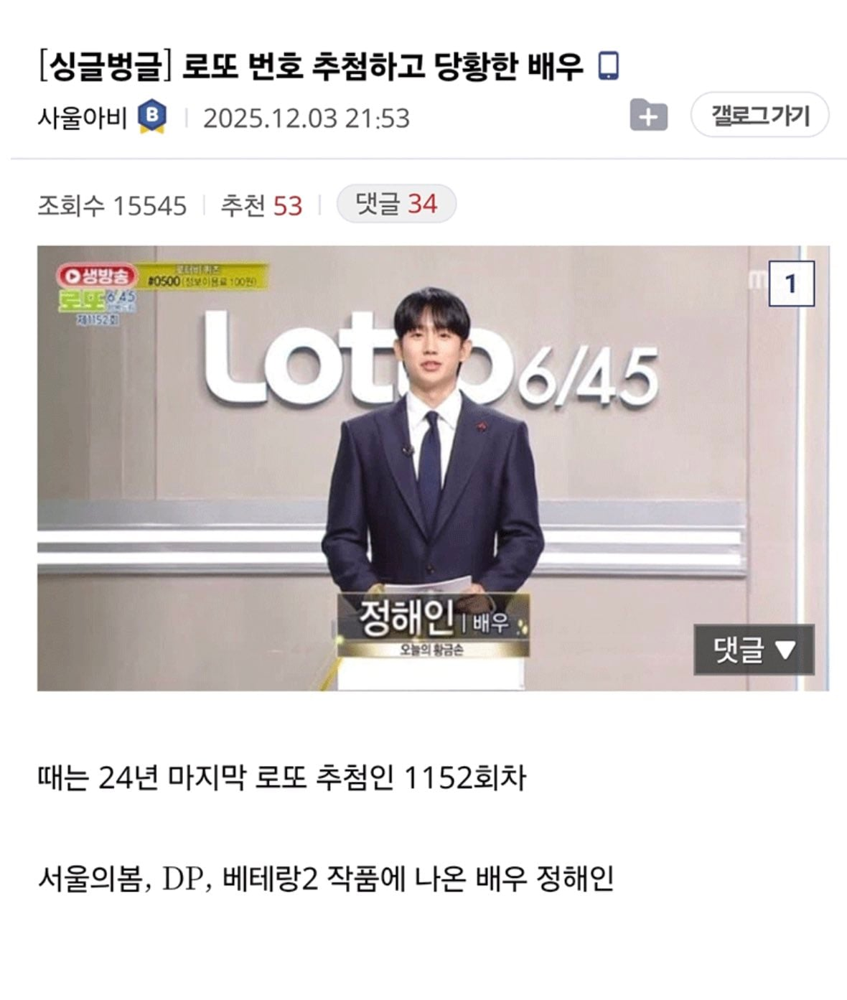
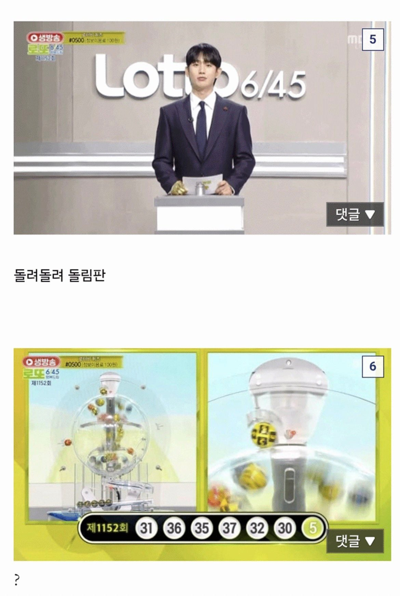
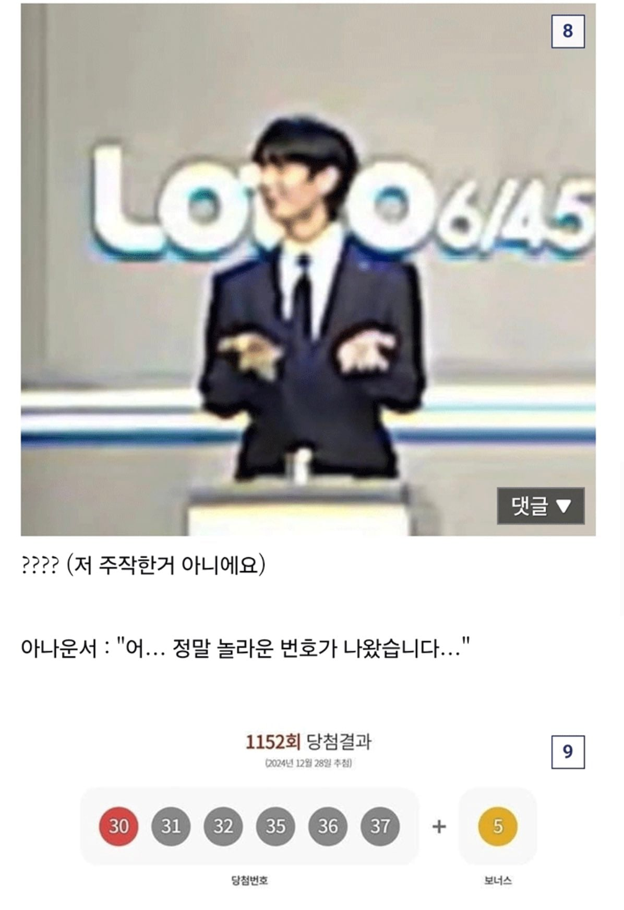

정약용 선생님 보기에 부끄럽지도 않나?



정약용 선생님 보기에 부끄럽지도 않나?
그거도 웃긴게 매주 참관인들이랑 같이 공 무게 다 잼 ㅋㅋ
진짜 아는거 없으니 음모론자들이 하는 소리임 ㅋㅋ
모름직이 내가 당첨되면 역사상 유래없는 가장 공정한 선정이지만, 내가 떨어지면 누가봐도 조작임
모름지기....
고소하이 처 직이네
아니 진짜 뭐야ㅐ ㅋㅋㅋㅋㅋㅋㅋㅋㅋ 30번대 6개에 5 하나라고? 장난하지마라곸ㅁㅋㅋㅋㅋㅋㅋㅋㅋㅋㅋㅋ
저번주인가 저저번주도 저 모양 아니였냐 시벌 ㅋㅋㅋㅋㅋㅋㅋㅋㅋㅋㅋㅋㅋ
?
저런 번호가 안나오면 오히려 이상할 것 같던데, 어차피 1부터 45까지 사람이 임의대로 붙인 번호고, 확률상으로는 1,5,12,37,35,43 조합이나 1,2,3,4,5,6 조합이나 5,10,15,20,25,30 조합이나 다 같은 확률인데, 만약 조작한다고 하면 오히려 저렇게 티나게 할까? 진짜 조작할 것 같았으면 오히려 고르게 번호 흐트려놓고 이목 피하면서 하겠지 ㅋㅋㅋ
그런 생각을 할줄알면 조작이라고 주장을 안함
30,31,32,35,36,37....오!
손모양개웃기네
30 31 32 33 34 35 36 37 골랐으면 2등이네 ㅋㅋㅋ
로또는 645 즉 45개 중 6개 번호얌
쭉 그어도 33 34가 있으니깐 많아야 4등 5만원
글쿠만 3등이네 그럼 일자로 골랐으면
뒤에 감탄사까지 넣어주네 ㅋㅋ
와 저거 당첨금 존나 쌧겠네
35게임 당첨임
그 중에 자동이 12개 반자동이 1개
의외로 우리가 빡세다고 생각하는건 진짜 착각임
오.. 123456이나 저거나 확률은 같은거 머리로는 알겠는데 저렇게 진짜 찍는구나 ㅋㅋㅋㅋ
123456으로 사는 사람도 개많음
난 사실... 조용하게 말하자면 그 당첨자 수가 조작이라고 생각함.....
숫자 뭐나오는지 주작? 그거보다 훨씬 쉬운게 당첨자 수 조작이라고 생각함
저 게임도 원래 로또 당첨확률이 810만분의 1인데,
1등당첨자 수 비율이 340만분의 1임... 크게 차이가 남
2025년에 시행된 전체 로또 중에
1등당첨자 수가 1등당첨확률보다 높았던 회차는 무려 52번 중에 42번임
고작 10번만이 1등당첨확률보다 낮게 뽑힘
ㄴㄴ저런건 개적음
저것도 35개 나옴 당첨금 세전 8억 7천
궁금해서 찾아보니 1,2,3,4,5,6 을 찍으면 당첨 될경우 당첨자가 만명에서 십만명이 된다고 함 ㄷㄷ
?? : 어쩌라고 니들이 뭐할수있는데 씨발놈들아
걍 독립시행이라서 모든수의 당첨조합은 확률이 다 같음
그걸 이해를 못하는 애들이 음모론에 빠지고 그러더라
저런게 도리어 조작 안된 결과 아니냐
조작을 할꺼면 골고루 섞겠지
그 생각을 노리고 저렇게 내보낸단다 음모론자들은 ㅋㅋㅋ
무슨 소릴해도 아무튼 조작이라고 함
매니저한테 갑질 할때부터 알아봤다
숫자라서 그렇지 동물그림이라고 생각하면되긴하는데 정해인 네이놈 주작했구나!!!!!!!!!!!!!
이걸 스트레이트를 못띄우네
팩트: 조작할 의도라면 이따구로 티나게 안함
저거말고 20번대랑 10번대 몇번을 본거같다 씹 ㅋ ㅋ
이런거 생각보다 많던데 이래서 특정 공 무게를 다르게 해서 조작한다는 소리가 나오는건가 ㅋㅋ